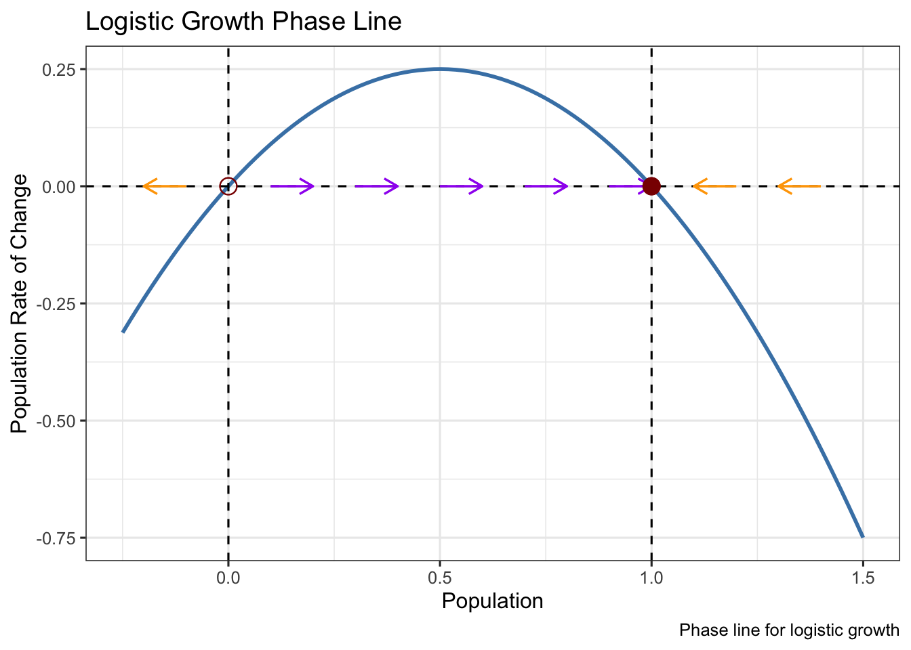

Warning: Using `size` aesthetic for lines was deprecated in ggplot2 3.4.0.
ℹ Please use `linewidth` instead.Warning in geom_segment(aes(x = 0.9, y = 0, xend = 1, yend = 0), arrow = arrow(length = unit(0.3, : All aesthetics have length 1, but the data has 2 rows.
ℹ Please consider using `annotate()` or provide this layer with data containing
a single row.Warning in geom_segment(aes(x = 0.7, y = 0, xend = 0.8, yend = 0), arrow = arrow(length = unit(0.3, : All aesthetics have length 1, but the data has 2 rows.
ℹ Please consider using `annotate()` or provide this layer with data containing
a single row.Warning in geom_segment(aes(x = 0.5, y = 0, xend = 0.6, yend = 0), arrow = arrow(length = unit(0.3, : All aesthetics have length 1, but the data has 2 rows.
ℹ Please consider using `annotate()` or provide this layer with data containing
a single row.Warning in geom_segment(aes(x = 0.3, y = 0, xend = 0.4, yend = 0), arrow = arrow(length = unit(0.3, : All aesthetics have length 1, but the data has 2 rows.
ℹ Please consider using `annotate()` or provide this layer with data containing
a single row.Warning in geom_segment(aes(x = 0.1, y = 0, xend = 0.2, yend = 0), arrow = arrow(length = unit(0.3, : All aesthetics have length 1, but the data has 2 rows.
ℹ Please consider using `annotate()` or provide this layer with data containing
a single row.Warning in geom_segment(aes(x = 1.2, y = 0, xend = 1.1, yend = 0), arrow = arrow(length = unit(0.3, : All aesthetics have length 1, but the data has 2 rows.
ℹ Please consider using `annotate()` or provide this layer with data containing
a single row.Warning in geom_segment(aes(x = 1.4, y = 0, xend = 1.3, yend = 0), arrow = arrow(length = unit(0.3, : All aesthetics have length 1, but the data has 2 rows.
ℹ Please consider using `annotate()` or provide this layer with data containing
a single row.Warning in geom_segment(aes(x = -0.1, y = 0, xend = -0.2, yend = 0), arrow = arrow(length = unit(0.3, : All aesthetics have length 1, but the data has 2 rows.
ℹ Please consider using `annotate()` or provide this layer with data containing
a single row.Warning in geom_point(aes(x = 0, y = 0), color = "darkred", size = 4, shape = 1): All aesthetics have length 1, but the data has 2 rows.
ℹ Please consider using `annotate()` or provide this layer with data containing
a single row.Warning in geom_point(aes(x = 1, y = 0), color = "darkred", size = 4): All aesthetics have length 1, but the data has 2 rows.
ℹ Please consider using `annotate()` or provide this layer with data containing
a single row.